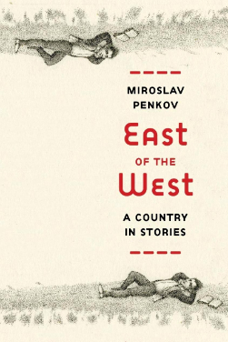

East of the West: A few words about the stories

When I was a child, I did not much like to read, because I was lazy
and preferred to play soccer outside. I did not like to be read to
either, because repetition bored me and because my parents were
really good story tellers for years my mother told me about the
adventures of two little hippos (brother and sister) who we d send
around the world and get into all sorts of trouble, while my father
told me stories about Bulgarian history: khans, tsars, rebels
fighting the Turks.
As a college student in the US, I wrote stories of my own,
pseudo-American stories influenced by my teenage love of Stephen
King, a writer I still admire greatly. It became apparent, very
quickly, that the fake American stories I wrote were unconvincing
garbage. Taking a class in Western History, I was amazed to find out
that the professor was writing his dissertation on janissaries in
the Balkans. He asked me if I could translate a Bulgarian text for
him. I was mesmerized, the way I d been as a child, by our own
history. How could I have forgotten it? Why was I not writing
stories like these, packed with heroism, betrayal, courage and
cowardice, freedom and death?
And so I began this book. I wanted people to listen and be
moved by our tales, and to show them that Bulgarians are not all car
thieves and prostitutes, though there are plenty of those too. As a
boy I d listened to my father and felt calm and safe, and twenty
years later I wanted to feel that same way. Writing about Bulgaria
was the only way I knew that would get me back to Bulgaria not
just my family, whom I miss greatly, but also our muddy village
roads, black fields, blue mountains...
A few words on Bulgarian history:
Bulgaria was founded in 681 AD, and
was a great European power for about six hundred years. Then, like
Greece, Serbia, and other countries of the Balkans (the name comes
from a Turkish word that means chain of wooded mountains ), it fell
under Ottoman rule. Only in 1878 it was finally free to make its own
history again. The enlarged Bulgaria envisioned by the treaty that
ended this conflict alarmed the Great Powers, who were guided by the
divide and conquer principle (just look at the term balkanization,
used to mean the process of fragmentation or division of a state.)
And so they started to chip away at our territories. The Balkan Wars
ignited, and Bulgaria seized the first opportunity to get the land
back that we d lost in the wars: we allied with Germany during World
War I, lost that war, and lost even more land.
All this fighting and losing was bad
for our morale, and many young people fell in love with Communism,
which spoke of strange and beautiful ideas like fraternity and
equality and power to the workers. An uprising in 1923 was crushed
by the Tsarists, and Bulgaria stayed a monarchy until the second
major uprising in 1944 when the Communist Party took complete
control of the country for 45 years.
Back to the stories:
In EAST OF THE WEST we have stories
that speak of Bulgaria as it was during the Ottoman years and then
as it was during the fights for liberation from the Turks. There are
stories that speak of the Balkan Wars, of the chokehold and fall of
Communism. There are stories that speak of what became of both
Christians and Muslims in Bulgaria when regimes changed. Then
finally there are stories that show the reader what s happening now,
while so many young people leave for the West in search of a better
life. The final and most modern story of the collection, Devshirmeh,
leads us onward in time, but also twists and takes us back, and like
a snake bites its own tail.
Once upon a time the Turks stole
Bulgarian boys and turned them into Ottoman soldiers. This is the
Devshirmeh, the blood tribute. It is an awful, sentimental, tragic
part of our folklore, but if we read historical sources carefully,
we can find instances when parents offered their children to the
Turks because a Muslim soldier could live a much better life than
a Christian peasant.
The stories in
EAST OF THE WEST tackle all these upheavals of history
individually, and through individuals, but I believe that when read
together the stories complement each other, like pieces in a puzzle
adding up to reveal a larger picture.
Today, more than a million Bulgarians
live abroad, and I have seen countless parents (my own included)
encourage their children to leave, to seek a better life away from
home; and I ve seen Bulgarians change their names, abandon their
language, take on new beliefs, new ideologies and identities, forget
where they came from. Yes, history repeats itself and nothing is new
under the sun, but history can be forgotten. With this book, I
wanted to remember.
Map of contemporary Bulgaria

Table of Contents
There are eight stories in East of the West. Here you can find either the opening paragraph of each or an excerpt that I thought captures the story's voice.
Introduction
Makedonija
East of the West
Buying Lenin
The Letter
A Picture With Yuki
Cross Thieves
The Night Horizon
Devshirmeh
First Bulgarian Empire* Brief Timeline